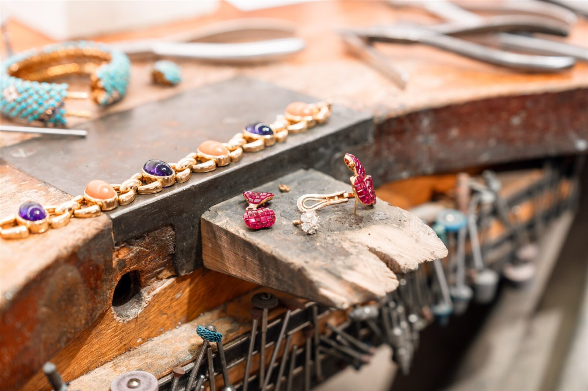
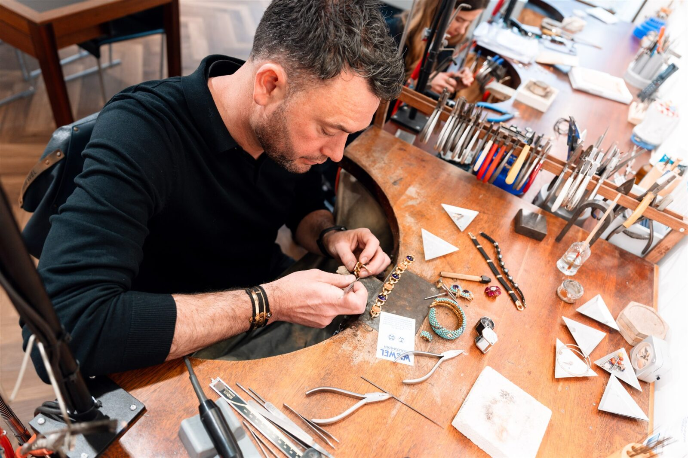
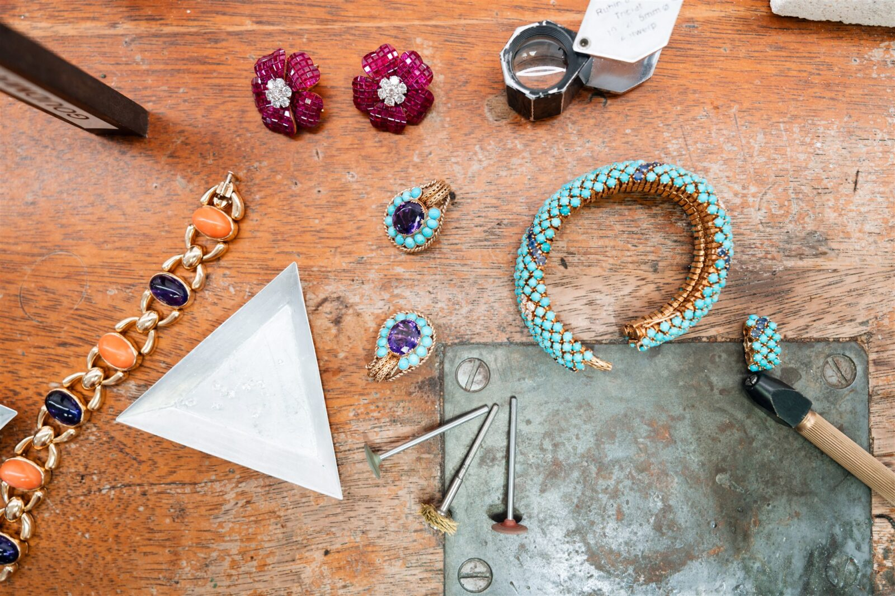

Restauratie van juwelen

Restaureer de glorie van antieke sieraden
Bij Wiewel Goudsmeden begrijpen we de historische waarde en unieke charme van antieke sieraden. Als specialisten in het restaureren van antieke juwelen, zijn we toegewijd om deze kostbare stukken in hun oorspronkelijke glorie te herstellen.
Met aandacht voor authenticiteit en vakmanschap, gebruiken we alleen hoogwaardige materialen en respecteren we de oorspronkelijke stijl en esthetiek van het sieraad. We zorgen voor zorgvuldige reiniging, het vervangen van ontbrekende stenen, het repareren van beschadigde zettingen en het herstellen van verfijnde details.

Vakkundig omgaan met complexe restauraties
Het restaureren van juwelen vereist vaak complexe technieken om uw (antieke) juweel te herstellen. Denk aan het zorgvuldig repliceren van ontbrekende onderdelen of het herstellen van eerdere onvakkundig uitgevoerde reparaties. Bij Wiewel Goudsmeden demonteren en reconstrueren we uw juweel met de grootste precisie. Dankzij moderne technieken, zoals laserlassen, kunnen we restauraties uitvoeren die anders niet mogelijk zouden zijn.

Gun uw antieke sieraad een nieuwe kans
Bent u in het bezit van een vergeten juweel dat ergens in een lade ligt? Wordt het niet gedragen vanwege beschadigingen of omdat het niet meer past bij de hedendaagse stijl? Antieke sieraden hebben vaak een unieke charme en dragen een emotionele waarde met zich mee. Bij Wiewel Goudsmeden staan we voor u klaar om samen met u de perfecte oplossing te vinden om uw antieke juweel nieuw leven in te blazen.